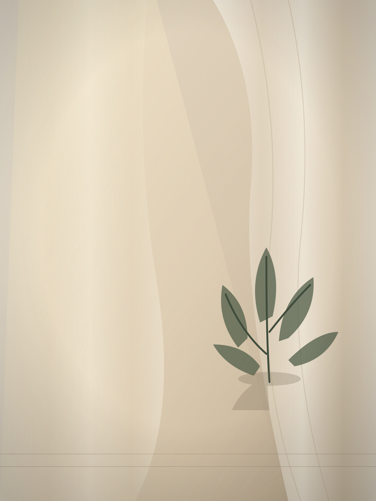
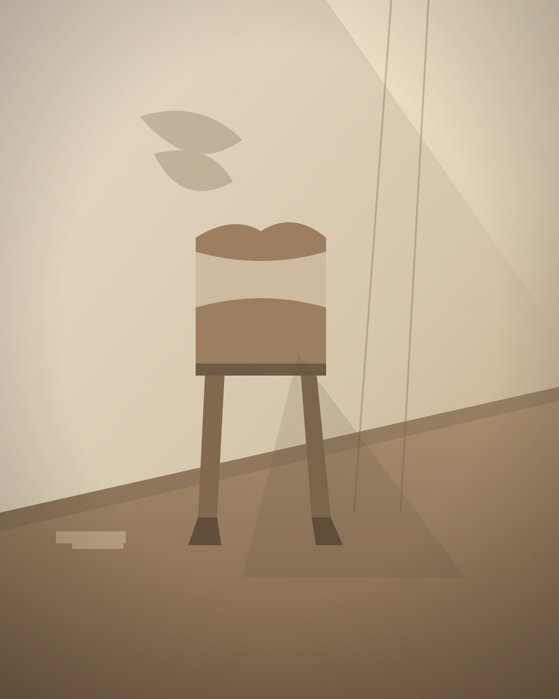
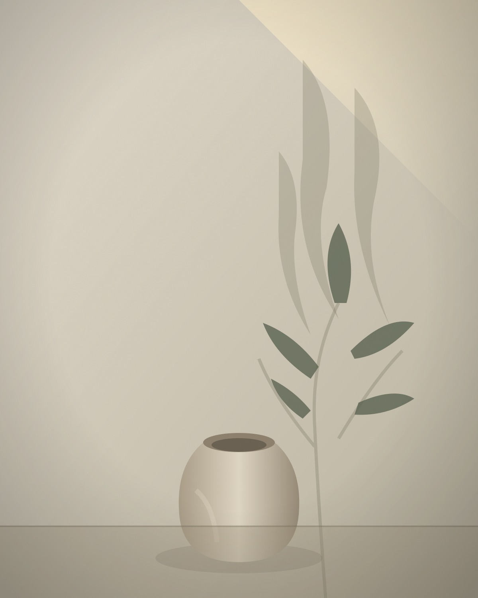
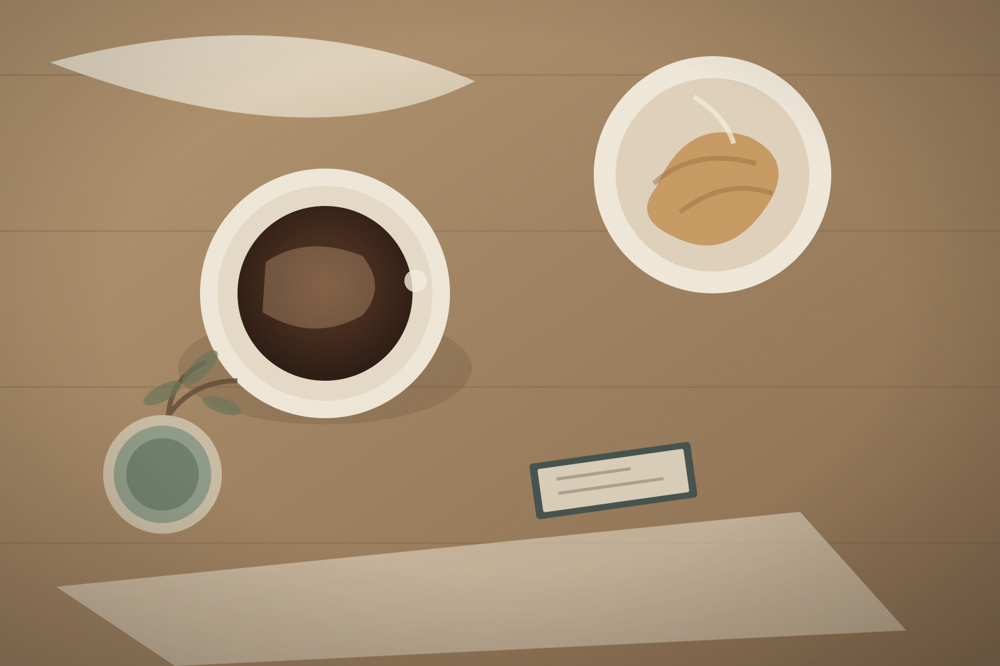
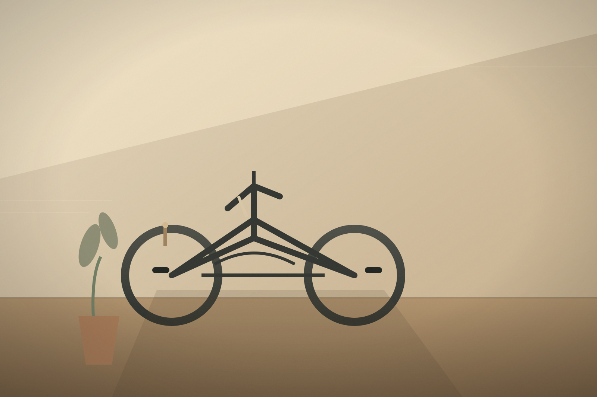
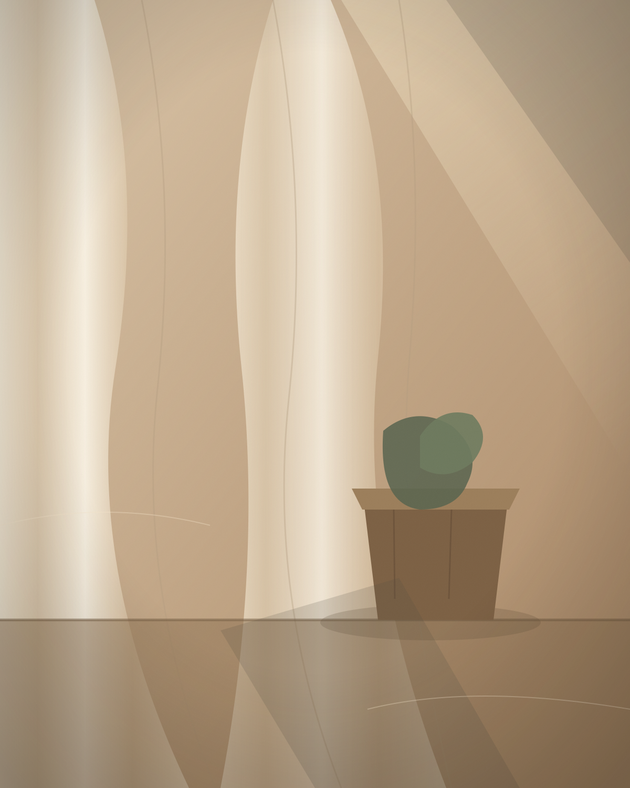

Album 03 / 04 · 2024—2025
日常的光
The Light of Ordinary Days
- 年份
- 2024—2025
- 地点
- 上海 / 杭州
- 影像
- 9 幅（精选 5 幅）
- 页数
- 24 页
- 介质
- 数码 · 中画幅
卷首语 / Prologue
远方教会我们眺望，日常教会我们停留。
这一册没有远行。照片大多拍于住处附近：一张被午后照亮的桌子， 一把空椅子，一杯忘了喝的咖啡。它们安静得几乎不值得举起相机。
但正是这些没有被安排的片刻，组成了我们真正的生活。光每天来一次， 坐在同一个位置，又在某个时刻悄悄离开。
拾光 · 2025 年 12 月
Chapter 01Morning
晨光Before the Day Begins
太阳越过对面的屋顶，先照亮墙，再照亮椅子。屋子醒来的速度， 比人慢一些。


“所谓日常，
就是那些重复了很多次，却仍然愿意多看一眼的事。” 日常笔记 · 十一月
Chapter 02Afternoon
午后A Table by the Window
一天里最慢的三个小时。咖啡凉了，书翻到同一页， 自行车靠在墙边，影子比早晨短了一点。


Chapter 03Dusk
黄昏The Last Warm Hour
风把窗帘吹起来，金色在布料的褶皱里停留了一会儿。 一天没有发生什么大事，这很好。

End Note · 03 / 04
生活不是等待某一天，
而是把每一天，过成值得记住的样子。
雪线以北
Beyond the Snow Line · 2026 冬